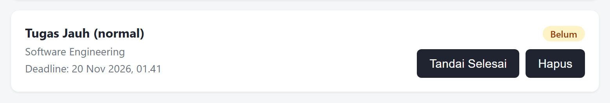
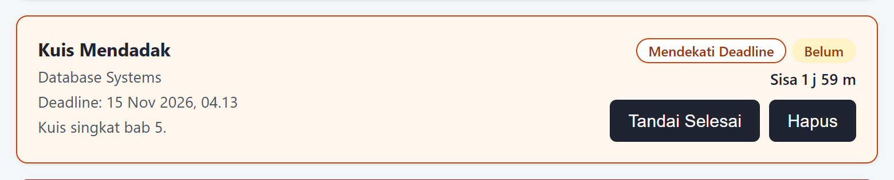
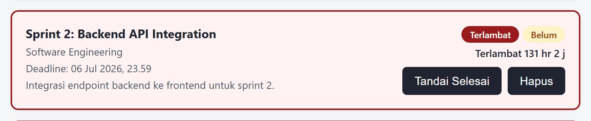
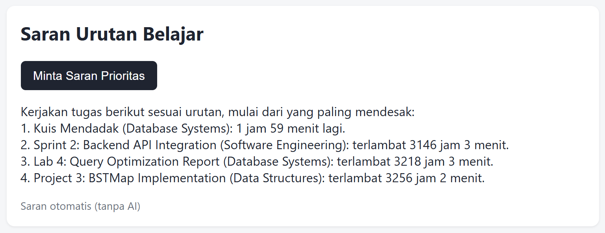

Studi Kasus Video Assessment
Academya Arkavidia 11.0, Career Path Software Engineer
Perancangan teknis per layer: Database, Backend, Frontend
[NAMA PESERTA: diisi sendiri]
Tugas 1 | Perencanaan Teknis (3P)
Kebutuhan F01 sampai F04 dijawab dengan tiga pertanyaan panduan:
deadline, status, dan waktu saat ini.mendekati, overdue, normal) dan urutkan per kelompok.Tugas 1 | Perencanaan Teknis (3P)
| Perubahan | Database | Backend | Frontend |
|---|---|---|---|
| Kategori dan sisa waktu diturunkan | Tidak terdampak | Terdampak | Tidak terdampak |
| Urutan per kelompok (mendekati, overdue, normal) | Tidak terdampak | Terdampak | Tidak terdampak |
| Penanda visual dan refresh | Tidak terdampak | Tidak terdampak | Terdampak |
Tabel ini hanya alat bantu (sesuai guidebook). Baris yang terdampak menjadi task di P3.
Tugas 1 | Perencanaan Teknis (3P)
| No | Deskripsi Task | Layer | Ketergantungan | Catatan/Asumsi |
|---|---|---|---|---|
| 1 | Dokumentasikan keputusan tidak mengubah skema tugas; opsional jelaskan index (user_id, deadline) untuk DB sungguhan | Database | - | Kategori yang disimpan akan basi seiring waktu, jadi dihitung per request. deadline adalah waktu lokal tanpa zona dan diperlakukan sebagai WIB. |
| 2 | Tulis parseDeadlineWIB(deadline) yang mengubah YYYY-MM-DDTHH:mm menjadi instan absolut dengan offset tetap +07:00 | Backend | - | Zona waktu host server tidak boleh berpengaruh. |
| 3 | Tulis categorizeTask(task, now) yang mengembalikan {kategori, sisa_menit}: mendekati jika 0 < sisa < 24 jam, overdue jika sisa <= 0, selain itu normal; status diabaikan | Backend | 2 | now bisa disuntikkan untuk tes. Tepat 24 jam adalah normal. Tepat 0 adalah overdue (waktu habis). Tugas selesai ikut ditandai (keputusan pengguna, mengikuti F01 secara harfiah). |
| 4 | Ubah GET /api/tasks: tambahkan kategori dan sisa_menit; urutkan mendekati (terdekat dulu), overdue (yang baru lewat dulu), normal (created_at terbaru dulu); kembalikan server_time | Backend | 3 | Memenuhi F02/F03/F04. Pengurutan di server agar sumber kebenaran tunggal. |
Tugas 1 | Perencanaan Teknis (3P)
| No | Deskripsi Task | Layer | Ketergantungan | Catatan/Asumsi |
|---|---|---|---|---|
| 5 | Tambahkan penanda berbasis kategori pada TaskCard (normal / mendekati / overdue) dengan label teks, tidak hanya warna | Frontend | 4 | Kebenaran logika lebih diutamakan daripada kompleksitas tampilan. |
| 6 | Halaman Tugas mengambil ulang data tiap 60 detik dan saat jendela mendapat fokus | Frontend | 4 | Halaman yang dibiarkan terbuka tidak boleh menampilkan kategori basi. |
| 7 | Tambahkan unit test categorizeTask memakai tabel data contoh dengan now tetap | Backend | 3 | Kasus yang sama menjadi tabel verifikasi Tugas 3. |
| 8 | Tambahkan POST /api/ai/prioritas + tombol UI saran urutan belajar, dengan rantai fallback | Backend + Frontend | 4 | Bonus AI. Tidak diwajibkan oleh F01 sampai F04. |
Ketiga layer terwakili: Database (task 1), Backend (task 2, 3, 4, 7, 8), Frontend (task 5, 6, 8).
Tugas 2 | Rancangan Teknis
id, judul, deskripsi, deadline, status, mata_kuliah_id, created_at, user_id. Semuanya sudah cukup untuk fitur ini.kategori yang disimpan akan salah seiring waktu berjalan dan butuh background job untuk memperbaikinya, jadi kategori diturunkan saat request.(user_id, deadline) membantu bila penyaringan dipindah ke SQL.deadline disimpan sebagai waktu lokal tanpa zona dan diperlakukan sebagai WIB.Tugas 2 | Rancangan Teknis
WIB_OFFSET = "+07:00" parseDeadlineWIB(s) -> Date // new Date(s + ":00" + WIB_OFFSET) categorizeTask(task, now): // status sengaja diabaikan: kategori hanya bergantung pada deadline remainingMs = parseDeadlineWIB(task.deadline) - now if remainingMs <= 0: overdue else if remainingMs < 24*3600*1000: mendekati else: normal // sisa_menit dibulatkan ke arah nol; nol atau negatif bila overdue sisa_menit = trunc(remainingMs / 60000)
Masukan: task.deadline (YYYY-MM-DDTHH:mm, WIB), now (Date, bisa disuntikkan).
Keluaran: {kategori, sisa_menit}.
Tugas 2 | Rancangan Teknis
GET /api/tasks:
now = new Date()
tasks = userTasks.map(add kategori, sisa_menit, mata_kuliah)
sort by group rank (mendekati=0, overdue=1, normal=2), lalu dalam grup:
mendekati: sisa_menit asc
overdue: sisa_menit desc (paling baru lewat dulu)
normal: created_at desc
respond { tasks, server_time: now.toISOString() }
Masukan: token login (hanya tugas milik pengguna itu, F04).
Keluaran: { tasks: [..., kategori, sisa_menit, mata_kuliah], server_time }.
Tugas 2 | Rancangan Teknis



Kondisi penentu: task.kategori dari backend. Refresh tiap 60 detik dan saat fokus; penanda selalu memuat teks.
Sumber gambar: aplikasi nyata pada 15 Nov 2026 sekitar 02.14 WIB (now = jam server): data seed (semua sudah terlambat) ditambah satu tugas bertenggat sekitar 2 jam lagi dan satu tugas bertenggat 3 hari lagi.
Tugas 3 | Pendekatan Verifikasi
| No. | Kondisi / Input | Hasil yang Diharapkan | Jenis Skenario |
|---|---|---|---|
| 1 | now = 2026-07-02 09:00 WIB; tugas 2 deadline 07-02 10:00 | Tugas 2 mendekati, sisa_menit = 60, tampil paling atas (urutan id 2, 3, 1). Test: seed at 2026-07-02T09:00+07:00 | Positif |
| 2 | now sama; tugas 1 (07-03 23:59) dan tugas 3 (07-06 23:59) | Keduanya normal; tugas 1 sisa_menit = 2339 (sekitar 39 jam), tugas 3 lebih jauh; urut created_at terbaru dulu. Test: sama dengan skenario 1 | Positif |
| 3 | now = 2026-07-04 00:00; tugas 1 dan tugas 2 | Keduanya overdue (tugas 1 -1, tugas 2 -2280 menit), tetap tampil (urutan 1, 2, 3), penanda overdue bukan mendekati. Test: seed at 2026-07-04T00:00+07:00 | Negatif |
| 4 | Tugas 2 dengan status = selesai dan now = 2026-07-02 09:00 | Tetap mendekati (status tidak mengubah kategori); card juga memuat badge status "Selesai". Test: selesai is still flagged | Edge Case |
Data acuan: tabel contoh guidebook (tugas 1: 07-03 23:59, tugas 2: 07-02 10:00, tugas 3: 07-06 23:59), now tetap. Semua test ada di backend/test/deadline.test.js dan lulus.
Tugas 3 | Pendekatan Verifikasi
| No. | Kondisi / Input | Hasil yang Diharapkan | Jenis Skenario |
|---|---|---|---|
| 5 | now = 2026-07-01 10:00; tugas 2 (tepat 24 jam tersisa) | normal, sisa_menit = 1440 (harus kurang dari 24 jam secara ketat); satu menit kemudian mendekati, 1439. Test: exactly 24h is normal | Edge Case |
| 6 | now = 2026-07-02 10:00; tugas 2 (sisa tepat 0) | overdue, sisa_menit = 0. Test: exactly 0 is overdue | Edge Case |
| 7 | Zona waktu host server diatur ke UTC | Hasil sama dengan host WIB (juga diuji dengan America/Los_Angeles). Test: host timezone irrelevant | Edge Case |
| 8 | Tugas dekat deadline milik pengguna lain | Tidak dikembalikan (F04: hanya tugas sendiri). Test: only returns the logged-in user's own tasks (tasks.api.test.js) | Negatif |
Ringkasan jenis: Positif (1, 2), Negatif (3, 8), Edge Case (4, 5, 6, 7). Skenario 1 sampai 7 ada di deadline.test.js, skenario 8 di tasks.api.test.js.
Tugas 3 | Hasil Pengujian
| Perintah | Hasil |
|---|---|
cd backend && npm test | 57 test lulus, 0 gagal, 0 dilewati (7 berkas) |
cd frontend && npm test | 4 test lulus, 0 gagal (format sisa waktu) |
npm --prefix frontend run build | Build berhasil (Vite 8.1.0, 80 modul) |
Rincian backend: deadline.test.js 16 (kategori, urutan, WIB, zona host), advice.test.js 10 dan ai.api.test.js 6 (saran AI), llm.test.js 9 (provider), static.test.js 7 (frontend dari Express), config.test.js 5 (konfigurasi production), tasks.api.test.js 4 (endpoint tugas).
Test AI memakai provider tiruan, jadi tidak ada pemanggilan Gemini sungguhan di dalam test. Skenario verifikasi 1 sampai 8 memetakan ke test yang lulus di atas.
Ringkasan
| Data (Database) | Backend | Frontend |
|---|---|---|
deadline | parseDeadlineWIB lalu categorizeTask menghasilkan kategori, sisa_menit | task.kategori, task.sisa_menit memilih penanda dan teks sisa waktu |
status | diabaikan oleh categorizeTask, diteruskan apa adanya | badge "Belum" / "Selesai" tetap tampil |
created_at | urutan kelompok normal | tidak dihitung ulang di klien |
user_id | hanya tugas pengguna yang login (F04) | menampilkan apa yang diterima |
mata_kuliah_id | digabung menjadi mata_kuliah | nama mata kuliah di card |
Backend satu-satunya tempat kategori dan urutan dihitung. Frontend hanya menampilkan.
Bonus
POST /api/ai/prioritas memakai rantai Gemini, lalu model open-source, lalu aturan. Fallback berbasis aturan sudah terverifikasi (slide 15). Pemanggilan Gemini sungguhan belum dicoba (menunggu kunci API). [ISI setelah uji kunci: sumber gemini terkonfirmasi]db.json di free tier kembali ke seed saat redeploy atau restart.main, satu commit baseline (5db4a7e) lalu 12 commit deskriptif per langkah (feat, fix, style, docs).Bonus | AI/LLM

Tombol "Minta Saran Prioritas" memanggil POST /api/ai/prioritas. Server memilih tugas mendekati dan terlambat milik pengguna yang login; klien tidak mengirim data apa pun.
Satu panggilan per pengguna tiap 10 detik. Kunci API hanya di environment variable.
Keterangan "Saran otomatis (tanpa AI)" berarti sumbernya aturan bawaan, bukan keluaran model.
Penutup
Kategori diturunkan di backend tanpa mengubah skema. Urutan: Mendekati, lalu Overdue, lalu Normal. Penanda berlabel teks. 8 skenario verifikasi: Positif, Negatif, Edge Case.